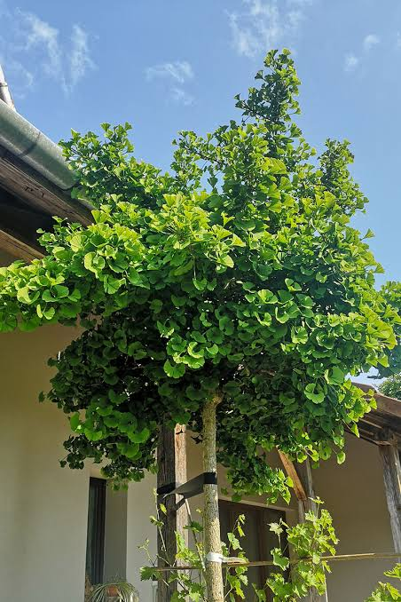
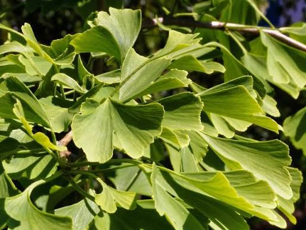
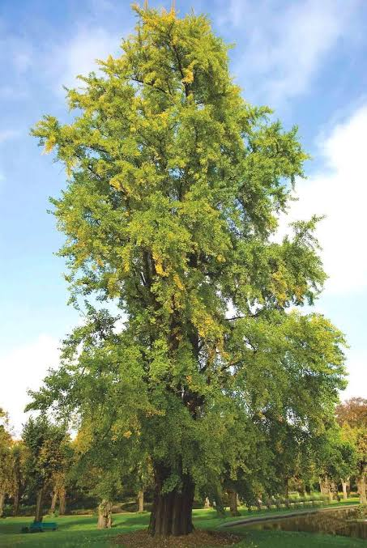
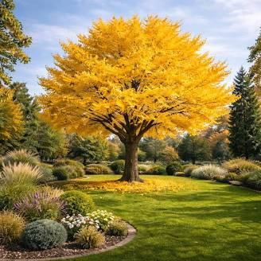

Miłorząb dwuklapowy (Ginkgo biloba) często spotykany jest także pod nazwą miłorząb chiński lub miłorząb japoński. Ta druga nazwa jest myląca, ponieważ gatunek pochodzi z Chin i naturalnie nie występuje na terenach Japonii. Powszechnie był tam jednak uprawiany od wielu wieków i to z Japonii miłorząb został sprowadzony do Europy.
Jest to wyprostowane drzew o wyraźnym, prostym pniu i regularnej, ale luźnej koronie. Rośnie dość wolno, ale jest długowieczny, więc docelowo może osiągać nawet 40 m wysokości.
Miłorząb dwuklapowy należy do roślin nagozalążkowych, tak jak rośliny iglaste. Jego liście jednak nie przypominają igieł, ponieważ mają szeroką blaszkę oraz opadają na zimę.
Miłorząb dwuklapowy jest gatunkiem reliktowym tj. posiada cechy typowe dla roślin rosnących w poprzednich epokach geologicznych. Z tego też powodu bywa nazywany “żywą skamieliną”.
Liście miłorzębu są zielone, mają długi ogonek i wachlarzowaty kształt. Na środku blaszki liściowej często występuje wcięcie, dzielące blaszkę na dwie, symetryczne części. Tej cesze miłorząb zawdzięcza swoją nazwę gatunkową: dwuklapowy. Jesienią liście miłorzębu przebarwiają się na jaskrawy, żótły kolor.
U odmian liście mogą mieć inny kształt i kolor niż u gatunku.
Liście miłorzębu dwuklapowego (łac. Ginkgo biloba folium) wykorzystywane są stosowane w medycynie ludowej do poprawy działania układu nerwowego i układu krążenia. Ekstrakt liści miłorzębu można znaleźć w wielu współczesnych suplementach diety zalecanych na poprawę pamięci i koncentracji.
Kwiaty miłorzębu są niepozorne i nie mają znaczenia dekoracyjnego. Kwiaty żeńskie występują na egzemplarzach żeńskich, a kwiaty męskie - na drzewach o płci męskiej. Żeńskie kwiaty mają postać nagich zalążków umieszczonych zwykle po 2 na długiej szypułce. Kwiaty męskie to niewielkie, żółte kotki.
Miłorząb, jako roślina nagonasienna, nie wytwarza typowych owoców, ale wytwarzane przez niego nasiona pokryte są mięsistą osnówką, zatem wyglądem przypominają owoce i dla uproszczenia tak bywają nazywane.
Nasiona są wytwarzane tylko na egzemplarzach żeńskich w towarzystwie egzemplarza męskiego, który dostarcza pyłek.
"Owoce" miłorzębu mają kulisty kształt i przypominają śliwkę, zwykle występują pojedynczo na szypułce. Rozkładające się owoce wydzielają bardzo nieprzyjemny zapach przypominający woń zjełczałego masła. Z tego powodu w ogrodach znacznie chętniej sadzone są odmiany męskie.
Miłorząb występuje w wielu odmianach, które znacznie różnią się od gatunku. Szczególnie popularne są odmiany karłowe, o pokroju kulistym, które nadają się do małych ogrodów, skalniaków i do uprawy w pojemnikach. Odmiany mogą się także wyróżniać zabarwieniem liści oraz pokrojem (kolumnowy, płaczący).
Miłorząb dwuklapowy jest gatunkiem dwupiennym, tzn. na danym drzewie występują albo wyłącznie kwiaty męskie (egzemplarz męski), albo tylko kwiaty żeńskie, z których mogą powstawać owoce (egzemplarze żeńskie). Rozmnażane wegetatywnie (przez szczepienie) odmiany także są męskie lub żeńskie tzn. że wszystkie egzemplarze w ramach jednej odmiany mają tę samą płeć.
Miłorząb naturalnie występuje jedynie na nielicznych stanowiskach w Chinach, w terenach górskich. Jest endemitem i w naturze jest zagrożony wyginięciem.
W uprawie miłorząb jest bardzo popularny; zarówno gatunek jak i jego odmiany są powszechnie uprawiane w Azji, Europie i Ameryce. Można natknąć się na niego w zabytkowych parkach i ogrodach, a także we współczesnych parkach, ogródkach przydomowych i na miejskich osiedlach.
Gatunek charakteryzuje się niskimi wymaganiami oraz łatwością uprawy. Będzie dobrze rosnąć nawet nawet pod okiem początkującego ogrodnika. Miłorząb jest mrozoodporny i nie wymaga zabezpieczenia na zimę.
Najlepsza dla miłorzębu jest gleba przepuszczalna, umiarkowanie wilgotna, żyzna, o odczynie obojętnym lub lekko kwaśnym, raczej zwarta niż bardzo lekka. Miłorząb bardzo dobrze znosi suszę, nie toleruje natomiast stanowiska podmokłego i stojącej wody.
Wymagane jest pełne słońce lub jasny półcień. Miłorząb źle rośnie w cieniu, więc nie należy go sadzić przy północnej ścianie, pod okapem gęstych drzew ani na balkonach o wystawie północnej.
Tempo wzrostu miłorzębu jest wolne, drzewo rośnie powoli. Jedynie wyjątkowo, w sprzyjających warunkach i w niektóre lata młode okazy mogą przyrastać o 50-100 cm, ale z wiekiem długość przyrostów się zmniejsza.
Miłorząb rośnie powoli, za to jest drzewem długowiecznym, z łatwością dożywa setek lat, a niektóre egzemplarze mogą żyć nawet dłużej niż 1000 lat.
Szybkość wzrostu odmian miłorzębu jest inna niż u gatunku, zwykle jeszcze niższa. Karłowe odmiany zwiększają swoją wysokość o zaledwie kilka centymetrów w ciągu roku.
Termin i sposób sadzenia zależy od rodzaju sadzonki. Sadzonki z odkrytym korzeniem czyli bez bryły korzeniowej można sadzić tylko w okresie bezlistnym.
Najlepszym miejscem dla miłorzębu jest stanowisko słoneczne. Miłorząb dobrze czuje się przy południowej lub zachodniej ścianie budynku, z powodzeniem może także rosnąć na otwartej przestrzeni. Należy unikać sadzenia miłorzębu w miejscu zacienionym.
Miłorząb w szkółkach najczęściej oferowany jest w pojemnikach. Sadzonki miłorzębu z doniczek można sadzić o dowolnej porze roku z wyjątkiem okresu, kiedy ziemia jest zamarznięta. W ostatnich latach, kiedy nie występują mroźne zimy, miłorząb można sadzić niemal przez cały rok.
Najlepszym terminem do przesadzania miłorzębu na inne miejsce lub sadzenia sadzonek kupionych bez bryły (z tzw. odkrytym korzeniem) jest wczesna wiosna oraz jesień. Rośliny są wtedy w stanie spoczynku i bez liści i najlepiej znoszą przesadzanie. Sadzenie roślin z odkrytym korzeniem w czasie, gdy pędy są ulistnione, jest niewskazane i rzadko daje dobre rezultaty.
Sadzenie miłorzębu nie wymaga żadnych dodatkowych zabiegów. Aby posadzić miłorząb, należy:
Miłorząb dwuklapowy nie ma specjalnych wymagań i nie potrzebuje wyjątkowej pielęgnacji. Właściwie nie choruje i nie jest atakowany przez szkodniki, nie wymaga więc chemicznej ochrony. Nie wymaga także cięcia. Starsze, dobrze już zaaklimatyzowane na swoim stanowisku drzewo nie wymaga nawet podlewania.
Młode drzewka, których system korzeniowy nie jest jeszcze dobrze rozwinięty, mogą wymagać podlewania w czasie dłuższej suszy lub upałów. Podlewanie może być także wskazane u odmian karłowych, nie wytwarzających tak głębokich i mocnych korzeni.
Miłorząb to bardzo wdzięczne i urokliwe drzewo, a do tego mało wymagające, dobrze znoszące warunki miejskie w tym suszę i zasolenie gleby. To sprawia, że może być z powodzeniem sadzony praktycznie w każdej lokalizacji, na terenach miejskich, w parkach i ogrodach przydomowych.
Miłorząb dwuklapowy sprawdzi się jako:
Miłorząb ma liście, które jesienią opadają - jak u większości drzew liściastych. Ze względu na budowę kwiatów należą one jednak do roślin nagonasiennych (nagozalążkowych), tak jak drzewa iglaste. Z tego powodu poprawniej jest je zaliczać do roślin iglastych niż liściastych.
Liście miłorzębu są sezonowe, tzn. ich żywotność ogranicza się do jednego sezonu wegetacyjnego. Jesienią liście opadają. Wcześniej jednak bardzo efektownie przebarwiają się na jaskrawy, żółty kolor i w tym kolorze dość długo pozostają na drzewie.
Ze względu na swoją długowieczność i żywotność (miłorząb jest jedyną rośliną, która przetrwała wybuch bomby atomowej, znane są także przypadki odradzania się po zniszczeniu w pożarze), miłorząb jest symbolem witalności i długowieczności.
W Chinach miłorząb dwuklapowy jest także symbolem płodności i urodzaju.
Liście miłorzębu są stosowane w różnych specyfikach poprawiających pamięć i koncentrację. Ich pozytywny wpływ na układ nerwowy, ale także na układ krwionośny zostały potwierdzone w licznych badaniach.
"Owoce" miłorzębu tj. żółta osnówka otaczająca nasiono jest niejadalna. Dojrzała nieprzyjemnie pachnie.
Orzechy miłorzębu czyli jego nasiona (a dokładnie jądro znajdujące się w twardej “pestce”) są jadalne i w Chinach są uważane za przysmak. Konieczny jest jednak umiar, ponieważ spożyte w większej ilości są trujące i mogą powodować zatrucia pokarmowe, a nawet objawy neurologiczne. Szczególnie niebezpieczne mogą być dla dzieci oraz osób cierpiących na epilepsję.
Można natknąć się na informację, że dla osoby dorosłej bezpieczna jest ilość 10-40 szt. spożywanych dziennie, ale tylko przez krótki okres.



